Ein Laden in der Füssener Altstadt, in dem Kleidung ein zweites Leben bekommt und du lernst, es ihr selbst zu geben.
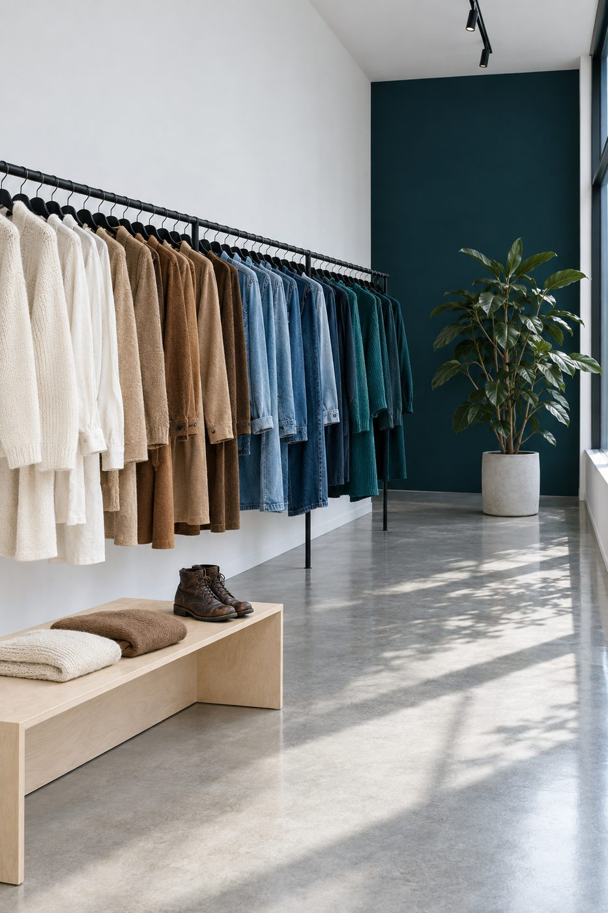
Ein Kreislauf, der nie ganz geschlossen ist.
Jedes Teil bei loop war schon einmal jemandes Lieblingsstück. Wir suchen aus, was gut gemacht ist, und machen es wieder gut. Was nicht mehr zu retten ist, wird Stoff für den nächsten Workshop. Nichts geht verloren.
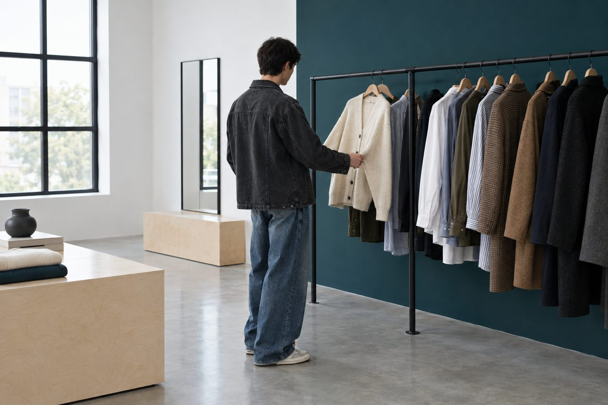
vintage
Handverlesene Stücke aus vier Jahrzehnten. Gewaschen, repariert, nach Farbe sortiert, bereit für die nächste Runde.
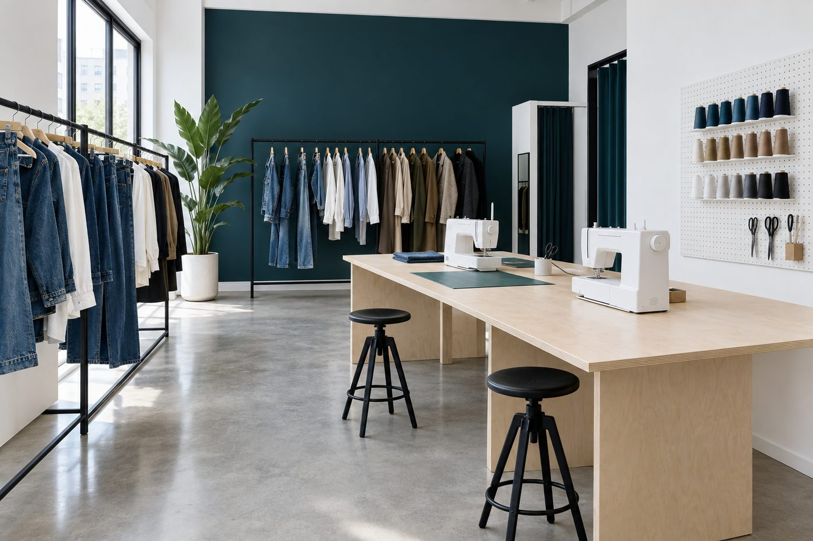
workshops
Flicken, stopfen, umarbeiten. Kleine Runden an einem großen Tisch, alles Material ist da.
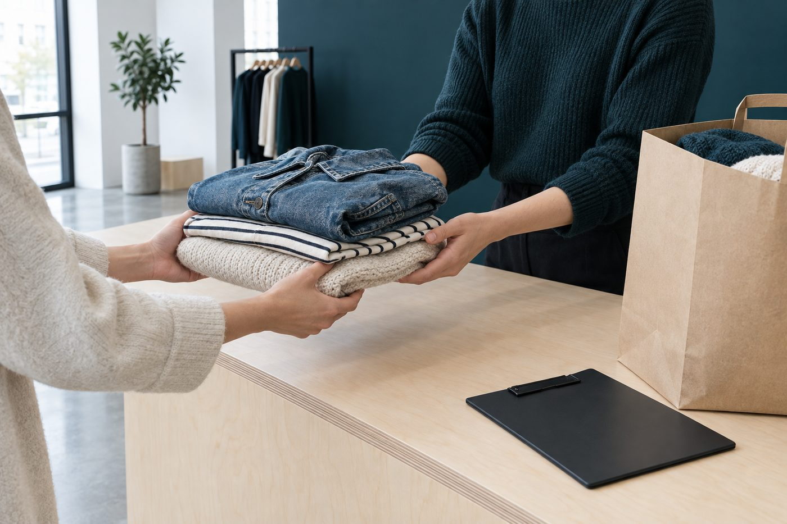
secondhand
Bring, was du nicht mehr trägst. Wir schauen es gemeinsam durch, und was passt, bekommt einen Platz auf der Stange.
Vier Workshops zum Start
Kleine Runden mit drei bis sechs Personen. Alle vier leitet Leanne selbst.
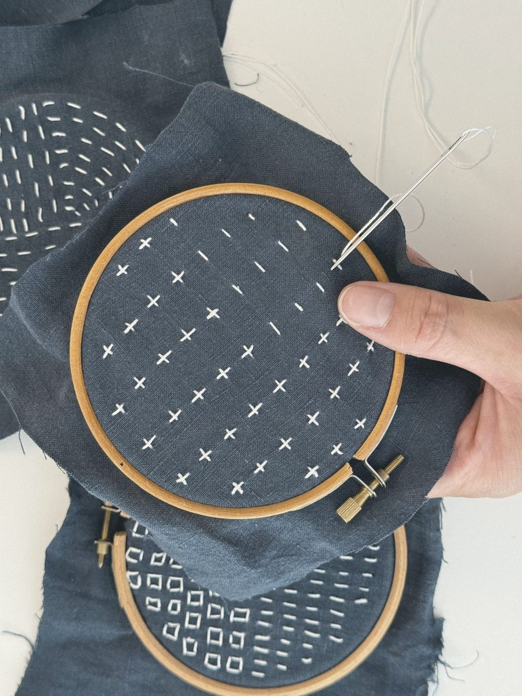
Visible Mending
Die Reparatur wird zur Verzierung. Nur Nadel und Faden.
59 € · bis 8 Plätze
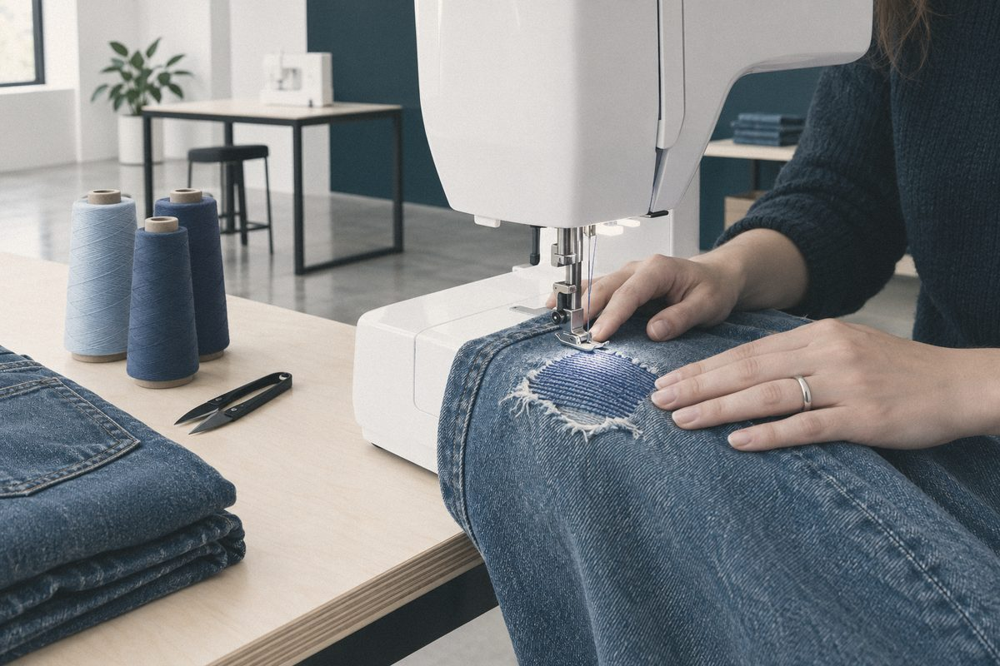
Denim Repair 101
Die Lieblingsjeans retten, so wie es Denim-Werkstätten machen.
55 € · bis 6 Plätze
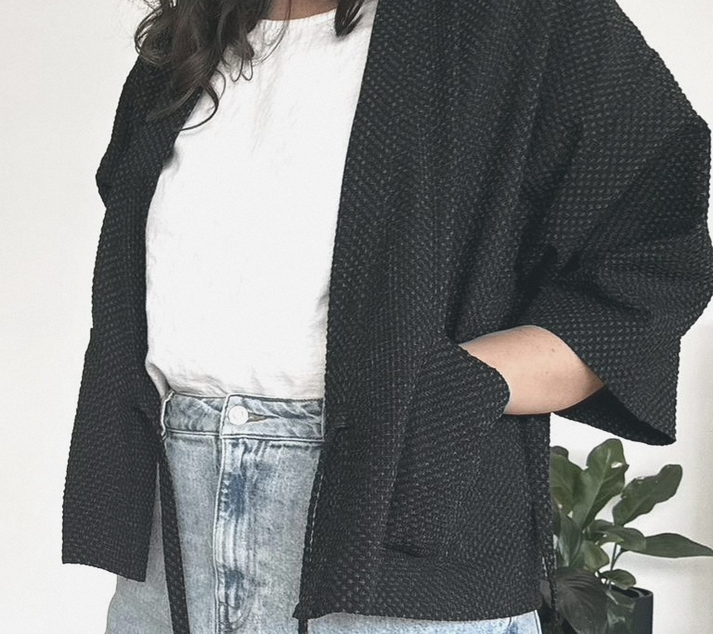
Pimp Your Shirt
Ein großes Herrenhemd wird gekürzt und bekommt ein Band.
49 € · bis 6 Plätze
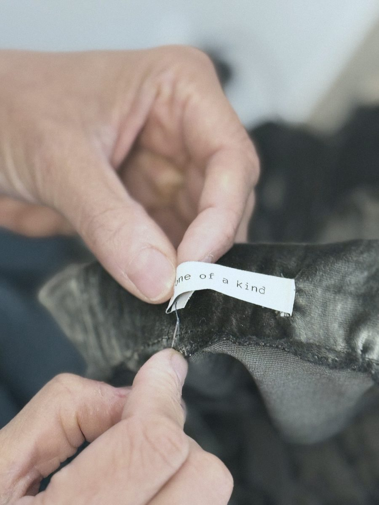
Freestyle Refashion Lab
Eigene Teile auseinandernehmen, neu denken, anders anziehen.
95 € · bis 6 Plätze
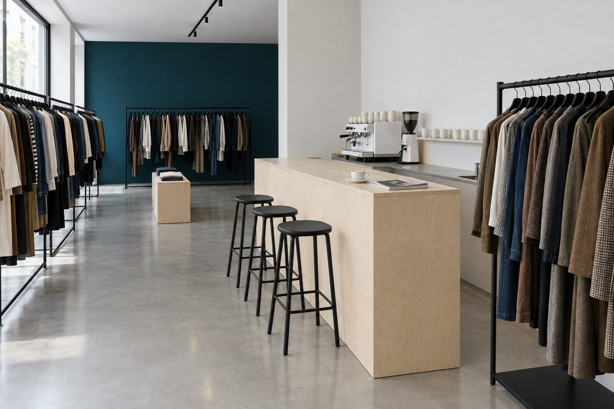
Bleib noch
auf einen Kaffee.
Vorne ein Sofa, Bücher und eine kleine Bar. Wer nur vorbeiläuft, bekommt seinen Kaffee durchs Fenster.
Brunnengasse 2,
Füssen.
- adresse
- Brunnengasse 2
87629 Füssen - zeiten
- Öffnet im Herbst 2026.
Die Öffnungszeiten stehen hier, sobald sie feststehen. - workshops
- termine ansehen
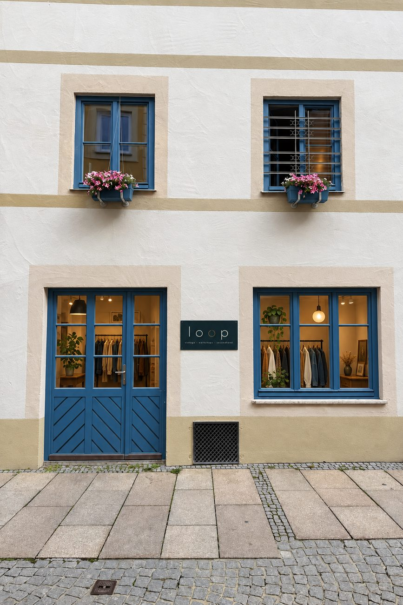